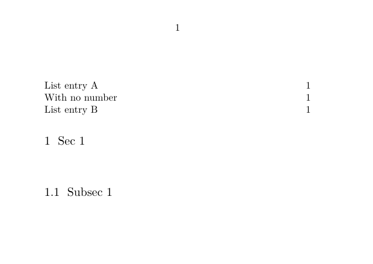
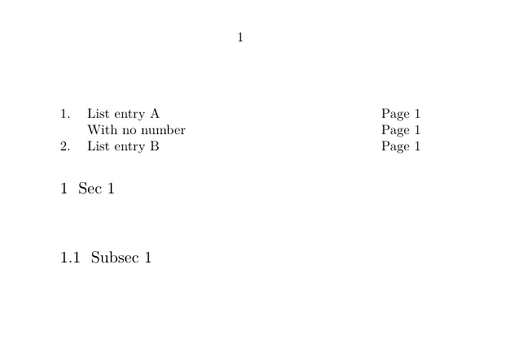

Contents
Summary
Settings
| \writetolist[...][...=...,...]{...}{...} | |
| [...] | list |
| ...=...,... | inherits from \setuplist |
| {...} | number |
| {...} | text |
| Option | Explanation |
|---|---|
| list | The name of a list defined with \definelist |
| number | The "item number" |
| text | Actual text |
Description
\subject{\bf My title!} \dontleavehmode \writetolist[myrandompart]{}{It's a test}
However, according to mailing list messages (from 2010), keep in mind that it introduces 'something' in the text stream, so when whitespace is setup, in some cases you can get some extra. Also, this box can end up on the current page or the next one, depending on the circumstances. In practice it's no real problem as one will do explicit writes inside boxes or so. I.e., just bind the write to some text.
In addition you might get spurious spaces after this command. So it is best to add a % sign after it.
The default table of contents is a combined list. To write to it one has to choose the level to which it should be inserted: \writetolist[chapter]{1.}{Chapter list entry A}, \writetolist[section]{1.1}{Section list entry A}, etc.
Examples
Example with default list formatting
-
\setuppapersize[A7,landscape] \definelist[Reprints][criterium=all] \starttext \completelist[Reprints] \section{Sec 1} \writetolist[Reprints]{1.}{List entry A}% \writetolist[Reprints]{}{With no number}% \subsection{Subsec 1} \writetolist[Reprints]{2.}{List entry B}% \completelist[Reprints] \stoptext
- 
Note that with the default formatting the numbers are not shown in the "Reprints" list.
Example with customized list formatting
-
\setuppapersize[A7,landscape] \definelist[Reprints][criterium=all] \setuplist[Reprints][alternative=command,command=\ReprintsEntry] \define[3]\ReprintsEntry{% \dontleavehmode \hbox to 2em{#1\hss}% #2 \hfill Page #3 \par } \starttext \completelist[Reprints] \section{Sec 1} \writetolist[Reprints]{1.}{List entry A}% \writetolist[Reprints]{}{With no number}% \subsection{Subsec 1} \writetolist[Reprints]{2.}{List entry B}% \completelist[Reprints] \stoptext
- 